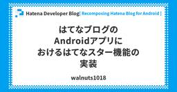

Hatena Developer Blog
https://developer.hatenastaff.com/
はてな開発者ブログ
フィード

はてなブログのAndroidアプリにおけるはてなスター機能の実装 5
5
Hatena Developer Blog
こんにちは、アプリケーションエンジニアの id:walnuts1018 です。 この記事は、昨年リニューアルされたはてなブログ Android アプリにまつわる開発体験や技術詳細を解説する連載 Recomposing Hatena Blog for Android の第三弾です。前回の記事は id:jj1uzh さんの はてなブログAndroidアプリのエディタ実装 でした。エディタ周りがうまく抽象化されていたおかげで初心者の私でも実装に取り組みやすく、とても助かった覚えがあります。 今回は、購読中のブログ記事画面において、はてなスターをアプリでつけられるようにした機能の実装について紹介します…
7日前

Fargate の CPU アーキテクチャと世代別のベンチマークで ECS の実行基盤を選ぶ
Hatena Developer Blog
はじめに この記事は SRE 連載です。 前月の記事ははてなブログに Amazon CloudFront SaaS Manager を導入した話でした。 前月に引き続き id:hagihala です。 はてなのとある Perl で実装された大規模サービス (以下「対象サービス」) は、Amazon ECS Fargate 上で運用しています。コスト最適化を検討するにあたり「Graviton (arm64) に移行すればコストが下がるのでは」という仮説のもと検討を始めたのですが、対象サービスのワークロードで実際に速くなるのか、信頼できるデータが必要でした。また昨年9月に Amazon ECS M…
10日前
サンリオで活躍中のid:r_kurainを訪問 | はてな卒業生訪問企画 [#21]
Hatena Developer Blog
連載企画「卒業生訪問インタビュー」 第21回のゲストは、株式会社サンリオで活躍中の id:r_kurain さんこと、倉井龍太郎さんです。はてなCTOのid:motemenがお話を伺いました。
11日前
はてなブログAndroidアプリのエディタ実装
Hatena Developer Blog
はじめに こんにちは、アプリケーションエンジニアの id:jj1uzh です。 Recomposing Hatena Blog for Androidは、昨2025年にリニューアルされたはてなブログAndroidアプリにまつわる開発体験や技術詳細を解説するブログシリーズです。 前回は「Webエンジニアが半年Androidアプリ開発をやってみて感じたこと」でした。私もWebのみの経験からAndroidを始めたので、共感しながら読みました。 今回はアプリの実装に踏み込んで、ブログアプリの根幹であるエディタについて以下の観点で紹介します。 WebViewを用いたリッチテキストエディタの実装 複数の記…
17日前
Hatena Engineer Seminar #37 「サービスを支える技術基盤編」を2026年6月30日にオンライン開催しました #hatenatech
Hatena Developer Blog
2026年6月30日（火）に開催した Hatena Engineer Seminar #37「サービスを支える技術基盤編」のレポートです。はてなのサービスを技術で支えつづけるエンジニア4名が登壇しました。表からは見えにくいものの、サービスの信頼性と進化を支える土台と技術的な挑戦について、現場におけるリアルな取り組みと技術的な詳細についてお話ししました。トークの発表資料と動画アーカイブを掲載しています。ぜひご覧ください！
21日前
はてなブログに Amazon CloudFront SaaS Manager を導入した話
Hatena Developer Blog
はじめに この記事は SRE 連載です。 前月の記事は id:k1s1eee さんの社内にLiteLLM Proxy（OSS版）を導入してマルチプロバイダLLM運用基盤を作った話でした。 id:hagihala です。 去年から今年の上半期にかけてはてなブログに Amazon CloudFront SaaS Manager (以下 SaaS Manager) を導入し、ブログへのトラフィックを CloudFront 経由に移行しています。2025年9月にはてな所有のワイルドカードドメインの移行 (第1段階) を完了、2026年3月には独自ドメインの CNAME 方式の移行 (第2段階) を完了…
23日前
Webエンジニアが半年Androidアプリ開発をやってみて感じたこと
Hatena Developer Blog
こんにちは，アプリケーションエンジニアの id:laminne です． 現在入社二年目で，学生時代は主にWebバックエンドをTypeScriptやGoで書いてきました．半年ほど前から，それまで未経験だったAndroidアプリ開発にも取り組んでいます． 具体的には，2025年11月にリニューアルされたはてなブログのAndroidアプリ の開発を担当しています． Android専任というわけではなく，それまで行ってきたきたWeb周りの開発も継続して取り組んでいます． 普段はiOSを使っており，ユーザーとしての知識はAndroid 10くらいで止まっていました．Android 12以降でデザインシス…
1ヶ月前
Hatena Engineer Seminar #37 「サービスを支える技術基盤編」を2026年6月30日にオンライン開催します #hatenatech
Hatena Developer Blog
こんにちは。CTOのid:motemenです。 2026年6月30日（火）に Hatena Engineer Seminar #37 「サービスを支える技術基盤編」を開催しますので、お知らせします。 Hatena Engineer Seminar #37 では、「サービスを支える技術基盤」をテーマに、はてなのサービスを技術で支えつづけるエンジニア4名が登壇します。表からは見えにくいものの、サービスの信頼性と進化を支える土台と技術的な挑戦について、現場におけるリアルな取り組みと技術的な詳細をお話しする予定です。 開催はオンラインです。（詳しくはconnpassのイベントページをご確認ください）。…
1ヶ月前
miseをリポジトリ用のタスクランナーとして「も」使う
Hatena Developer Blog
ノベルチーム Webアプリケーションエンジニアの id:polamjag です。 最近、ノベルチームの開発で使っているリポジトリにおいて、開発環境の起動をはじめとしたコマンド実行のためのタスクランナーとして、miseを使うようにしました。 mise.jdx.dev miseはツールのバージョン管理ツール*1として導入しているケースは多いと思います。一方で、それ以外の機能がたくさん入っている便利ツールであることは知っていても、実際にはそこまでいろいろな機能は使っていない、という方もそれなりにおられるのではないかと思うので、事例として書いておこうということで筆を執った次第です。 結論 もともとTa…
2ヶ月前
はてなのポッドキャスト Backyard Hatena #55 - AIと激流（id:daiksy） #byhatena
Hatena Developer Blog
はてな「技術グループ」によるポッドキャスト「Backyard Hatena」を更新。今回は技術グループ長の id:daiksy を迎えて、技術グループ長になってからの1年の振り返りや、AI活用から個人活動についてなど、お話しました。
2ヶ月前
TSKaigi 2026 にはてなのエンジニアが登壇します！
Hatena Developer Blog
フロントエンドエキスパートの id:mizdra です。2026年5月22日-5月23日にベルサール羽田空港でTSKaigi 2026が開催されます。 2026.tskaigi.org はてなはブロンズスポンサーとして協賛しています。そして弊社エンジニア id:susisu のプロポーザルが採択され、1日目に登壇します！また、 id:cateiruもイベントスタッフとして参加します。ふたりからのコメントをそれぞれ紹介します。 id:susisu toitta チーム Web アプリケーションエンジニアの id:susisu です。1 日目に「Stage 3 Decorators でできること …
2ヶ月前
Software Design 2026年6月号で toitta の技術選定について読めます
Hatena Developer Blog
toitta で AI 回りの開発を担当している id:pokutuna です。 5/18 発売の Software Design 2026年6月号の「技術選定の舞台裏」という連載に toitta の技術選定について寄稿しました。 gihyo.jp toitta は 2023年に発足した新規事業チームから生まれたインタビュー分析 SaaS です。録画・録音データをアップロードすると、書き起こし、発話の切片抽出、クラスタリング、レポート生成、横断検索などの機能でインタビューの分析と活用を支援します。 toitta.com 昨今は AI = LLM という雰囲気ですが、これらの機能のために LLM…
2ヶ月前
社内にLiteLLM Proxy（OSS版）を導入してマルチプロバイダLLM運用基盤を作った話
Hatena Developer Blog
はじめに この記事は SRE 連載の 4月号です。 3月の記事は id:chaya2z さんの GigaViewer の配信基盤を支えるマルチテナントアーキテクチャでした。 こんにちは システムプラットフォームチーム でSREをしています id:k1s1eee です。 弊社では現在、エンジニアだけでなくデザイナーやプロダクトマネージャーなど、職種を問わず広くLLM（大規模言語モデル）を業務に活用しています。 組織が大きくなるにつれ「誰が・どのモデルを・どれだけ使っているか把握できない」「プロバイダーが増えるたびにAPIキーの管理が増える」といった課題が見え始めてきました。 この記事では、そうし…
2ヶ月前
はてなサマーインターンシップ2026募集開始！今年も京都とリモートのハイブリッド！クイズに答えて応募しよう！
Hatena Developer Blog
技術グループ長 の id:daiksy です。このたび、はてなサマーインターンシップ2026の募集を開始しました。2026/8/17（月）～2026/9/4（金）に開催する3週間にわたるインターンシップとなります。エンジニアを目指す学生の皆さん、奮ってご応募ください。 「はてなサマーインターンシップ2026」は、1週間の京都オフィスと、2週間のリモートを組み合わせたハイブリッドなインターンシップです。 Webサービス開発の技術を学ぶ前半パートと、開発チームに配属されてサービス開発を実践する後半パートで構成されます。 前半日程は、Webサービスの開発・運用について、講義と課題による集中的なトレー…
3ヶ月前
Self-hosted runnerにおけるキャッシュ運用【Android】
Hatena Developer Blog
はじめに マンガアプリチームでAndroidエンジニアをしている id:matsudamper です。この記事ではSelf-hosted runnerにおけるAndroidのキャッシュの設定/運用方法を共有します。 はてなでは以前よりSelf-hosted runnerを運用しています。 developer.hatenastaff.com 2025年からはAndroidアプリ開発においても試験導入を開始しました。運用が安定してきたため、今回はSelf-hosted runnerにおけるGradleキャッシュの知見についてまとめます。 GitHub Actionsキャッシュの課題 GitHub …
3ヶ月前
try! Swift Tokyo 2026に参加しました
Hatena Developer Blog
こんにちは、iOSアプリエンジニアの id:gurrium です。 先日の記事でご紹介した try! Swift Tokyo 2026 に参加してきました。 メインの会場は立川ステージガーデンで、ここはコンサートやライブも行われる施設だけあって音響も照明も豪華でした。2階のテラスから日差しや風を感じながらセッションを見るのも気持ちよく、会場全体の雰囲気がとてもよかったです。 また、会場では英語・中国語・韓国語など様々な言語での会話が飛び交っており、改めて Swift コミュニティの広さを感じました。 印象に残ったセッション iOS Private Playgrounds フレームワークやライブ…
3ヶ月前
はてなサマーインターンシップ2026を開催します！
Hatena Developer Blog
こんにちは。はてな技術グループマネージャーの id:daiksy です。 今年も昨年に引き続き、8月後半〜9月前半にかけて3週間程度のプログラムを企画しています。リモートとオフィスの両方を活用したハイブリッドの開催となる予定です。 昨年の様子はこちらをご覧ください。 はてなサマーインターンシップ2025 レポートサイト はてなサマーインターンシップの特徴は、前半は講義、後半は実践と、「学び、そして作る」両方を体験してもらえることです。今回も、最高の夏を過ごしていただけるカリキュラムを準備中です。 前半はWebアプリケーション開発の講義と課題に取り組んでもらい、はてなのエンジニアスタッフによるコ…
3ヶ月前
はてなは try! Swift Tokyo 2026 にシルバースポンサーとして協賛しています
Hatena Developer Blog
こんにちは、iOSアプリエンジニアの id:gurrium です。 はてなは去年に引き続き try! Swift Tokyo 2026 にシルバースポンサーとして協賛しています！また、id:yutailang0119 が主催者としてイベントを運営しており、当日は id:gurrium と id:deflis55 も聴講側で参加します。 ノベルティにはチラシとステッカーが入っておりますのでぜひご覧ください。 try! Swift Tokyo 2026 開催概要 tryswift.jp try! Swift Tokyo は、世界中から開発者が集まってワークショップやカンファレンスを行うイベントです…
4ヶ月前
GigaViewer の配信基盤を支えるマルチテナントアーキテクチャ
Hatena Developer Blog
執筆: id:chaya2z この記事は SRE 連載の 3 月号です。 2 月の記事は id:koudenpa さんの Amazon AuroraのCPU世代を上げるとどうなる？ でした。 はじめに 技術的な課題 アーキテクチャ サイロモデル: CDN プールモデル: ロードバランサー・リバースプロキシ サイロとプールの境界 配信基盤の移行戦略 サイロとプールの橋渡し オリジンの保護 ふりかえり はじめに GigaViewer は、はてなが提供するマンガビューワーです。 2017 年のリリースから 2026 年 3 月現在で 20 以上のサービスに導入されています。 各サービスには専属のデザ…
4ヶ月前
人間がバグ修正でAIに負けた日
Hatena Developer Blog
「バグ修正では負けても、面白ためになる記事の執筆なら負けん！」という気持ちで生成AIと人間が同じ出来事――人間がバグ修正でAIに負けた日――について記事を書きました。
4ヶ月前
はてなのポッドキャスト Backyard Hatena #54 - Customer Reliablity Engineerと格闘ゲーム（id:KGA） #byhatena
Hatena Developer Blog
はてな「技術グループ」によるポッドキャスト「Backyard Hatena」を更新。今回はMackerelチーム CRE のid:KGAを迎えて、最近のMackerelやCREの活動、CREのおもしろいところ、「APM」、趣味活動についてなど、お話しました。
4ヶ月前
はてなはEMConf JP 2026にシルバースポンサーとして協賛しました
Hatena Developer Blog
こんにちは。技術グループ長のid:daiksyです。 はてなは、2026年3月4日(水)に開催された、EMConf JP 2026にシルバースポンサーとして協賛しました。 2026.emconf.jp はてなではエンジニアの人数が100名を超え、組織体制を整えるための手段のひとつとしてエンジニアリングマネージャーの登用・育成に力を入れています。はてなが主催する「エンジニアセミナー」でもそれらの取り組みを紹介していました。 developer.hatenastaff.com まさに今我々が直面している課題とも直結するため、EMConfの参加を通じてコミュニティとも接続しながら、微力ではありますが…
5ヶ月前
デザイナーとして活躍中のid:tikedaさんを訪問 | はてな卒業生訪問企画 [#20]
Hatena Developer Blog
連載企画「卒業生訪問インタビュー」 第20回のゲストは、株式会社くふうカンパニーホールディングスの専門役員であり、ご自身で立ち上げたデザインアンドライフ株式会社、株式会社CLANの代表取締役を務める id:tikedaさんこと、デザイナーの池田拓司さんです。。はてな取締役のid:onishiがお話を伺いました。
5ヶ月前
Amazon AuroraのCPU世代を上げるとどうなる？
Hatena Developer Blog
「相応にCPU依存処理が速くなる」 AWSに手堅くデータを保存するならやはりAmazon Auroraです。はてなで開発運用しているGigaViewerでもAurora for MySQLを主なRDBとして使っています。 先日、インスタンスタイプをr6gからr8gに更新し、インスタンスサイズを2/3に削減しました。この際のパフォーマンス変化の実績を共有します。 AWSからのリリースでは、インスタンスの世代が更新されると一定水準の高速化が見込める旨が提示されています。これの実際はどういうものなのか？ のサンプルとして参考になれば幸いです。 この記事は id:koudenpa が書いたSRE連載の…
5ヶ月前
aws-cdk で扱いやすい最小規模 Redis として Amazon ElastiCache Serverless を使う
Hatena Developer Blog
AWS 上のごく小規模な Redis のマネージドインスタンスが必要な局面で、費用と aws-cdk での取り回しを鑑みて ElastiCache Serverless を導入しました。 アプリケーションエンジニアの id:astj です。 ごく小規模なウェブサービスにおける（セッション情報などの）揮発性データストアとして Amazon ElastiCache の Redis を使っている箇所があるのですが、しばらく保守が行き渡っていなかったところ標準サポート期間が終了し、 AWS による延長サポートに切り替わってしまっていました。 aws.amazon.com 延長サポートされていることで一…
5ヶ月前
はてなのポッドキャスト Backyard Hatena #53 - ぴよ日記・大規模言語モデル講座（id:nakaoka3） #byhatena
Hatena Developer Blog
はてな「技術グループ」によるポッドキャスト「Backyard Hatena」を更新。今回はノベルチームのエンジニア id:nakaoka3と、はてラボでリリースした新サービス「ぴよ日記」についてや、motemenも受講した東京大学の松尾・岩澤研究室の大規模言語モデル講座についてなど、お話ししました。
5ヶ月前
はてなエンジニアのデスク事情をご紹介します 2026
Hatena Developer Blog
はてなでは、すべての従業員が在宅勤務と出社勤務とを自由に選択できるフレキシブルワークスタイル制度を導入しています。実際、多くのはてなスタッフが在宅中心の働き方を選んでいます。 また、在宅勤務手当（2万円／月）や入社時の在宅勤務一時金（12万円）の支給があり、自宅の勤務環境を整えるために活用することができます。 そんなはてなスタッフはどのような環境で在宅勤務しているのでしょうか？このエントリでは、はてなでエンジニアやディレクターとして働くスタッフの自宅デスクを紹介していきます。 デスク紹介 id:arthur-1 id:do-su-0805 id:lufiabb id:tokizuoh id:R…
6ヶ月前
専用アプリを作ってリレーマラソンの大会に参加してきました
Hatena Developer Blog
リレーマラソン専用アプリを使って挑んだ嵐山耐寒開運リレーマラソン。ランナー管理やタイム計測で完走を支えました。
6ヶ月前
「CRE Camp #4 ユーザー信頼性を支える現場の知見LT大会」をはてな東京オフィスで開催しました！
Hatena Developer Blog
1月21日、はてな東京オフィスで「CRE Camp #4 ユーザー信頼性を支える現場の知見LT大会」を開催しました。大いに盛り上がったこのMeetupイベントのレポートをお届けします。 こんにちは、はてなMackerel CREの id:kmuto です。 CRE Campは、Customer Reliability Engineering（CRE）やCustomer Support/Successに関わるエンジニアの皆さんに、プロダクトの信頼性向上とユーザー体験の改善に向けた取り組み事例を共有し、交流するMeetupです。 CRE自体は各社で実践が増えてきたものの、それぞれ役割や解釈が異なる…
6ヶ月前
Hatena Engineer Seminar #36「プロダクトを支えるAI編」をオンラインで開催しました #hatenatech
Hatena Developer Blog
2025年12月8日（月）に開催した Hatena Engineer Seminar #35「エンジニアリングマネージャー編」のレポートです。はてなのエンジニアリングマネージャー（EM）3名が登壇し、はてなのエンジニアリングマネージャーに関する評価・育成の取り組みに加え、日々の業務についてもお話ししました。トークの発表資料と動画アーカイブを掲載しています。ぜひご覧ください！
6ヶ月前